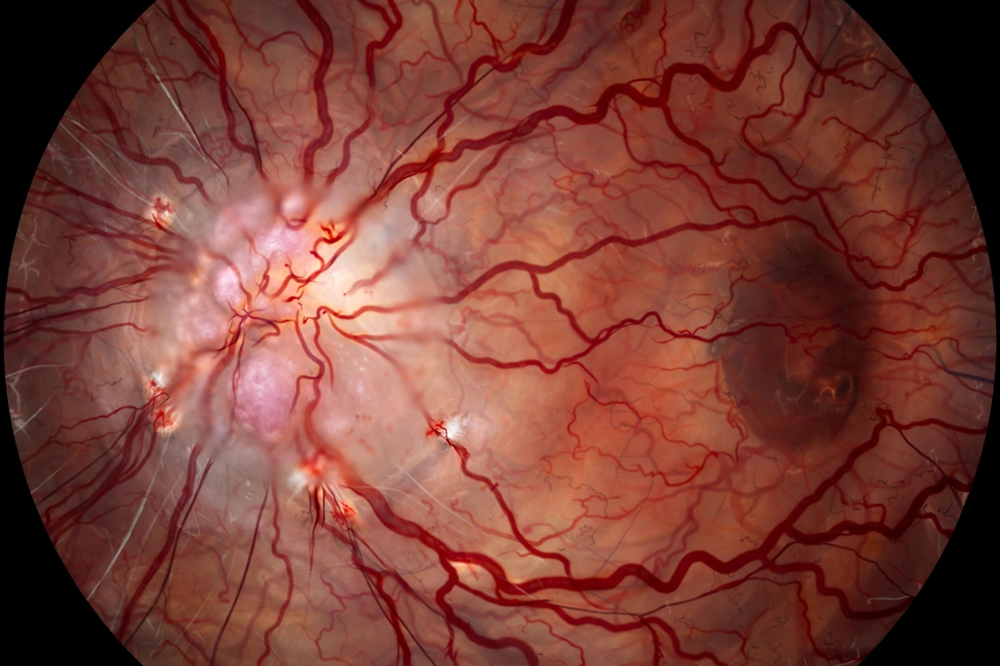

| Specialty | Ophthalmology, neurology |
|---|---|
| Symptoms | Vision loss in one eye, pain on eye movement, impaired colour vision |
| Usual onset | Over hours to days |
| Causes | Demyelinating disease, autoimmune disease, infection |
Optic neuritis is inflammation of the optic nerve that causes sudden, usually unilateral, visual loss. Typical symptoms include loss of visual acuity, pain that worsens with eye movement, impaired colour vision (especially desaturation of red) and a visual field defect, often with a relative afferent pupillary defect. In most cases the optic disc appears normal on examination because the inflammation is behind the globe (retrobulbar neuritis), though in about a third of patients the disc is swollen (papillitis).
The most common cause is demyelinating disease, and optic neuritis is often the first clinical event of multiple sclerosis: the long-term risk of developing MS after optic neuritis is roughly 50% over 15 years, higher when MRI shows typical brain lesions. Other important causes include neuromyelitis optica spectrum disorder (associated with aquaporin-4 antibodies, often bilateral and severe) and MOG antibody-associated disease. Infections, granulomatous disease and other autoimmune conditions account for smaller proportions.
The Optic Neuritis Treatment Trial (ONTT, 1988–2004) established that intravenous methylprednisolone speeds recovery of vision without improving the final visual outcome, and that oral prednisolone alone was associated with a higher recurrence rate. Most patients recover visual acuity to near-normal within a few weeks to months, though subtle deficits in contrast sensitivity and colour vision often persist. Patients with MRI lesions may be offered disease-modifying therapy for multiple sclerosis.